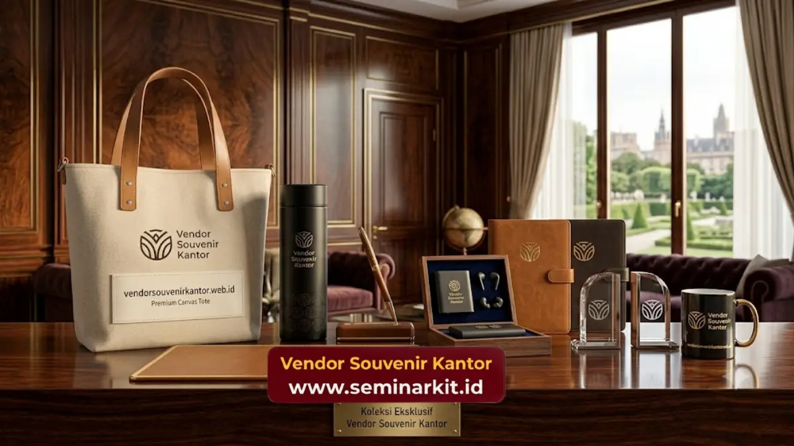

Souvenir kantor elegan untuk mitra bisnis adalah merchandise korporat dengan tampilan premium yang diberikan kepada klien atau relasi bisnis sebagai simbol penghargaan dan penguat hubungan profesional.
Jenis populer meliputi gift set eksekutif, mug keramik custom, dan pouch kulit sintetis. Pemilihan souvenir yang tepat mencerminkan citra dan kredibilitas perusahaan.
- Souvenir kantor elegan mencerminkan citra profesional perusahaan di mata mitra bisnis.
- Kemasan yang rapi turut memengaruhi kesan pertama penerima terhadap souvenir.
- Gift set eksekutif dan produk berbahan premium paling diminati untuk relasi bisnis.
- Pemberian souvenir pada momen yang tepat memperkuat dampak hubungan jangka panjang.
Menjaga hubungan baik dengan mitra bisnis dan klien membutuhkan lebih dari sekadar komunikasi transaksional.
Salah satu cara yang terbukti efektif untuk memperkuat relasi profesional adalah melalui pemberian souvenir kantor yang elegan dan mencerminkan kredibilitas perusahaan.
Dalam praktik corporate gifting, kesan pertama terhadap sebuah souvenir sering kali terbentuk dari kombinasi antara kualitas produk dan kemasan yang menyertainya, sehingga kedua aspek ini idealnya mendapat perhatian yang seimbang saat menyiapkan hadiah untuk relasi bisnis.
Mengapa Souvenir Elegan Penting dalam Menjaga Relasi Bisnis?
Souvenir elegan penting dalam menjaga relasi bisnis karena berfungsi sebagai simbol penghargaan yang memperkuat kesan profesional dan kepercayaan antara perusahaan dengan mitra atau kliennya.
Pemberian souvenir yang tepat dapat menciptakan kesan positif yang bertahan lama, terutama ketika diberikan pada momen penting seperti penandatanganan kerja sama, kunjungan korporat, atau perayaan akhir tahun bersama mitra bisnis.
Kesan ini pada akhirnya turut berkontribusi terhadap keberlanjutan hubungan bisnis jangka panjang.
Bagaimana Souvenir Memengaruhi Citra Perusahaan di Mata Klien?
Souvenir yang berkualitas dan dikemas secara profesional dapat memperkuat persepsi klien terhadap standar kerja dan perhatian detail yang dimiliki perusahaan dalam setiap aspek hubungan bisnis.
Sebaliknya, souvenir dengan kualitas rendah atau kemasan yang kurang rapi berisiko menimbulkan kesan yang kurang profesional, meskipun kualitas layanan atau produk utama perusahaan sebenarnya baik.
Oleh karena itu, pemilihan souvenir untuk relasi bisnis idealnya tidak dilakukan secara asal-asalan.
Jenis Souvenir Kantor Elegan yang Cocok untuk Mitra Bisnis
Jenis souvenir kantor elegan yang cocok untuk mitra bisnis meliputi gift set eksekutif berisi kombinasi alat tulis premium, mug keramik dengan desain minimalis, pouch atau dompet berbahan kulit sintetis, serta hampers dengan kemasan kotak kayu atau box premium.
Gift set eksekutif umumnya menjadi pilihan utama karena memberikan kesan formal dan lengkap dalam satu paket.
Mug keramik dengan desain minimalis juga sering dipilih karena kesan elegan namun tetap fungsional untuk digunakan sehari-hari oleh penerima di lingkungan kerja mereka.
Apa Perbedaan Souvenir untuk Karyawan dan Souvenir untuk Klien?
Perbedaan utama terletak pada tingkat formalitas dan kemasan, di mana souvenir untuk klien umumnya menggunakan bahan dan kemasan yang lebih premium dibanding souvenir untuk karyawan yang lebih menekankan aspek fungsional sehari-hari.
Souvenir untuk klien juga cenderung dirancang dengan desain yang lebih netral dan formal, mengingat penerimanya berasal dari latar belakang perusahaan yang beragam, sehingga tampilan produk perlu mencerminkan profesionalisme yang dapat diterima secara luas.

Peran Kemasan dalam Souvenir Kantor Elegan
Kemasan memiliki peran penting dalam souvenir kantor elegan karena menjadi elemen pertama yang dilihat penerima sebelum membuka produk di dalamnya, sehingga turut membentuk kesan awal terhadap kualitas keseluruhan souvenir.
Kemasan berbahan kotak kayu, box premium dengan finishing rapi, atau pouch berbahan kain tebal umumnya memberikan kesan lebih eksklusif dibanding kemasan plastik standar.
Detail kecil seperti pita atau label logo pada kemasan juga turut meningkatkan kesan personal dan profesional dari souvenir yang diberikan.
Bagaimana Memilih Kemasan yang Sesuai untuk Klien Korporat?
Pemilihan kemasan sebaiknya disesuaikan dengan tingkat formalitas acara dan profil penerima, di mana kemasan berbahan kayu atau box premium lebih sesuai untuk klien korporat dibanding kemasan sederhana yang biasa digunakan untuk souvenir internal.
Konsistensi warna dan logo pada kemasan dengan identitas visual perusahaan juga penting diperhatikan, karena hal ini membantu memperkuat pengenalan merek sekaligus menjaga kesan profesional di mata penerima.
Momen Tepat Memberikan Souvenir kepada Mitra Bisnis
Momen yang tepat untuk memberikan souvenir kepada mitra bisnis meliputi penandatanganan kontrak kerja sama, kunjungan korporat, perayaan akhir tahun, serta ulang tahun perusahaan mitra sebagai bentuk apresiasi atas hubungan yang telah terjalin.
Pemberian souvenir pada momen-momen strategis tersebut cenderung memberikan dampak yang lebih berarti dibanding pemberian tanpa konteks tertentu, karena selaras dengan pencapaian atau perayaan bersama yang sedang berlangsung dalam hubungan bisnis kedua belah pihak.
Perusahaan yang ingin memperkuat relasi bisnis melalui souvenir kantor elegan dapat berkonsultasi langsung dengan tim vendorsouvenirkantor.web.id untuk mendapatkan pilihan produk dan kemasan yang sesuai dengan citra profesional perusahaan Anda.
Kesimpulan
- Souvenir kantor elegan berperan penting dalam memperkuat citra profesional dan kepercayaan mitra bisnis.
- Gift set eksekutif dan produk berbahan premium menjadi pilihan utama untuk relasi bisnis.
- Kemasan yang rapi turut membentuk kesan awal terhadap kualitas souvenir yang diberikan.
- Pemberian souvenir pada momen strategis memperkuat dampak hubungan bisnis jangka panjang.
- vendorsouvenirkantor.web.id siap membantu perusahaan Anda menghadirkan souvenir kantor elegan yang mencerminkan profesionalisme bisnis Anda.

Banner promosi: klik gambar untuk langsung terhubung ke WhatsApp tim sales.